In a fast-changing world where the global focus has shifted toward living more sustainably, the industries of production and design have been forced to evolve. Enter the SuMoth (Sustainable Moth) Challenge. This unique competition unites passionate student teams from every corner of the globe to design, manufacture, and ultimately race a high-performance Moth sailboat. It’s more than just a race; the competition acts as a hub for cutting-edge innovation, pushing us to rethink the very materials and production methods we use to take to the water.